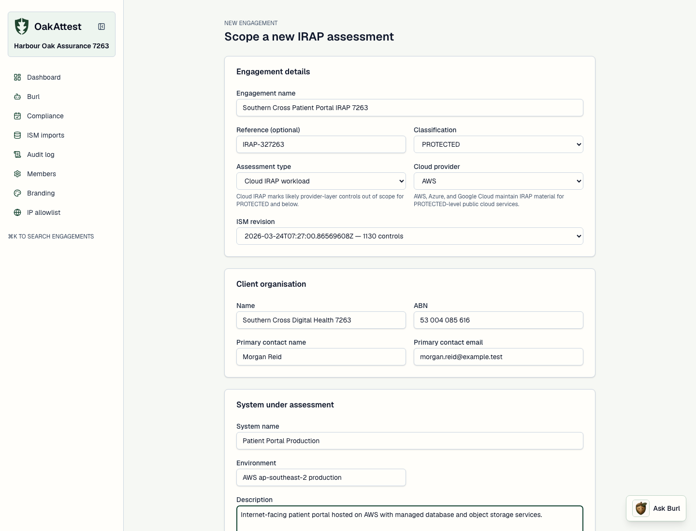
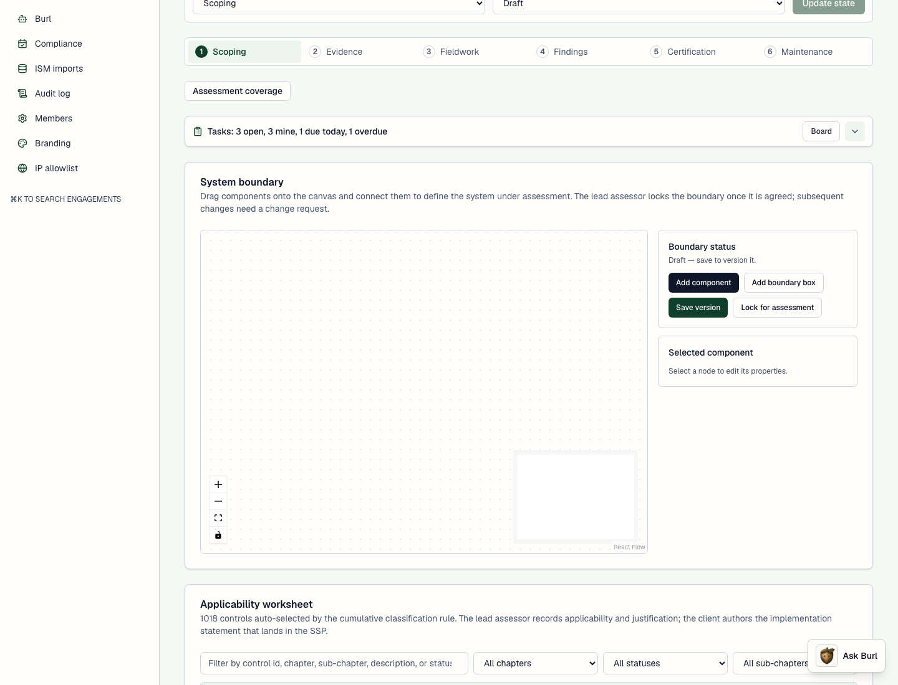
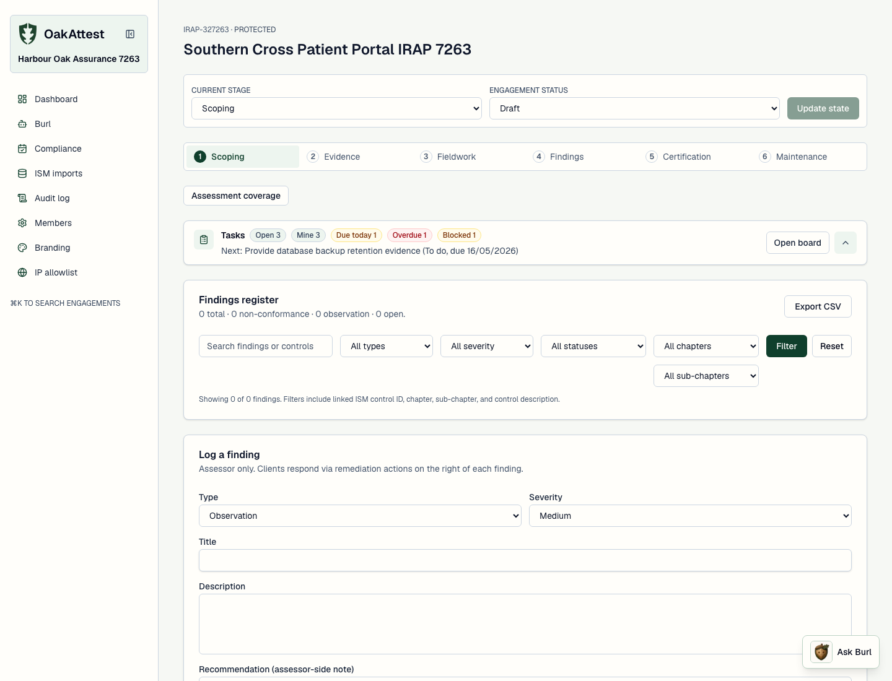
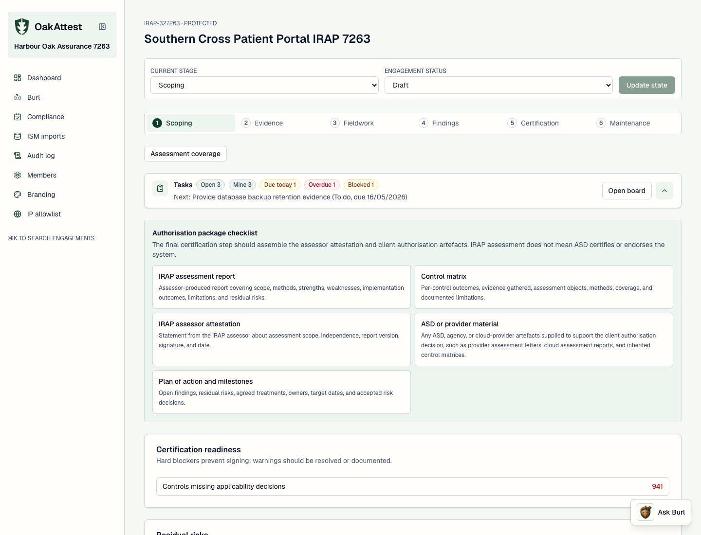
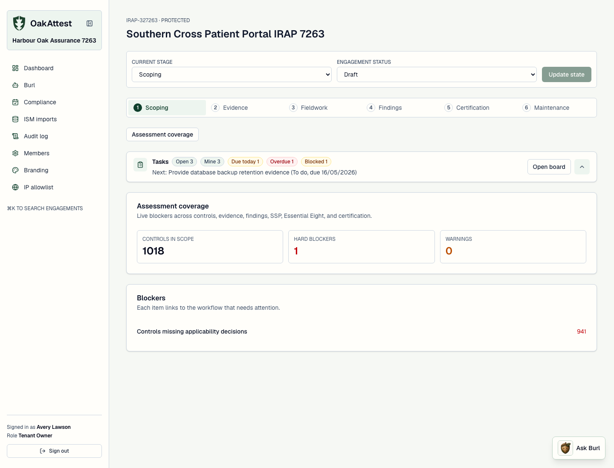
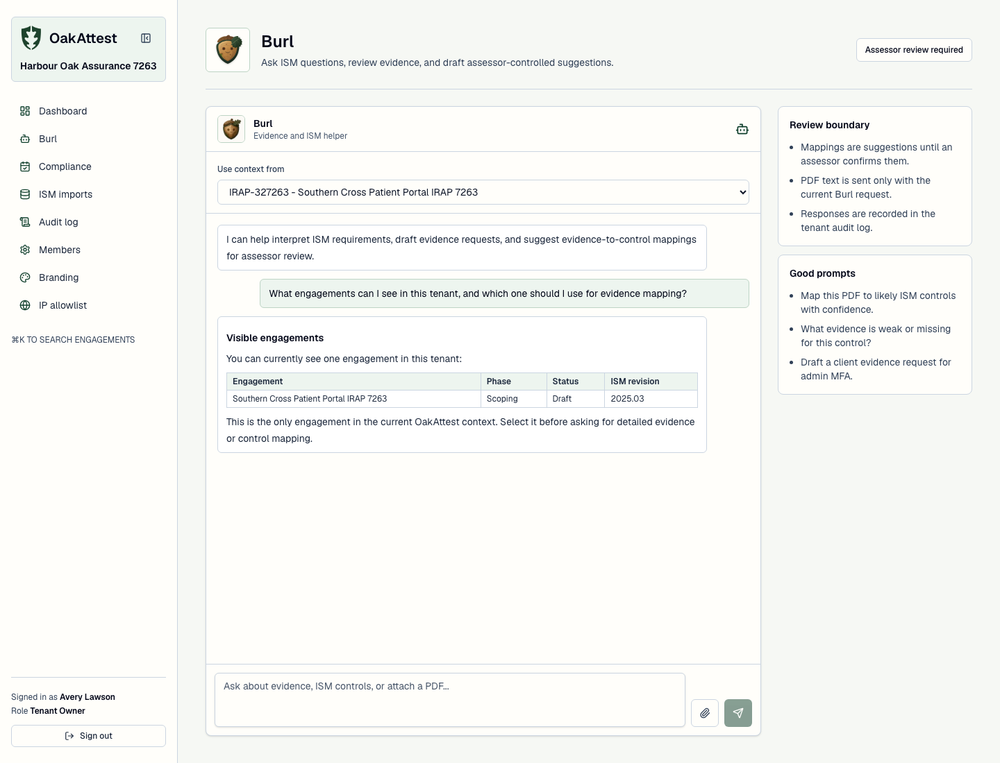

Self-installed
Run it on your own infrastructure. Email delivery is optional, MFA is recommended not forced, and your data never leaves your deployment.
IRAP and beyond
OakAttest takes a security assessment from scoping to defensible certification, with evidence chain of custody, role-aware access, and a full audit trail. One platform for the ISM, NIST 800-53, SOC 2 and ISO 27001.
Self-installed or managed · Australian data residency · Append-only audit
Pick a framework per engagement. OakAttest pulls official OSCAL catalogues, or lets a client import their own licensed control set, then scopes each engagement the right way.
Cumulative classification scoping, Essential Eight overlay, Cloud IRAP inheritance.
OSCAL · ASDRev 5 catalogue and baselines, pulled straight from the official OSCAL source.
OSCAL · NISTTrust Services Criteria imported by the client from their licensed copy via CSV.
Client CSVAnnex A control set imported per tenant, scoped by Statement of Applicability.
Client CSVOne model, many frameworks
Engagements are created against a client and a framework revision. Classification and IRAP options appear only for the ISM; everything else scopes by baseline or selection. No Australian-specific fields where they don't belong.

Built for MSPs
Stand up a single hosted instance, invite MSP partners, and let each manage their own isolated client tenants. Drop into any client workspace to do the work, with an "acting in" banner and a full context-switch audit trail.

Stay in the loop
Internal discussion threads keep the assessor team and the client side separate. Mention a teammate with @ and they are notified. Watch an engagement to be told the moment new evidence lands or a field changes.

Calm, dense, and built for repeated work, not a demo.






Run it on your own infrastructure. Email delivery is optional, MFA is recommended not forced, and your data never leaves your deployment.
One hosted instance, MSP partners and their clients underneath, each tenant isolated with its own plan, usage limits and branding.
Append-only audit log, row-level tenant isolation, role-based access, and declared data residency on every deployment.
From a single IRAP engagement to a full MSP practice across frameworks.
Get OakAttest